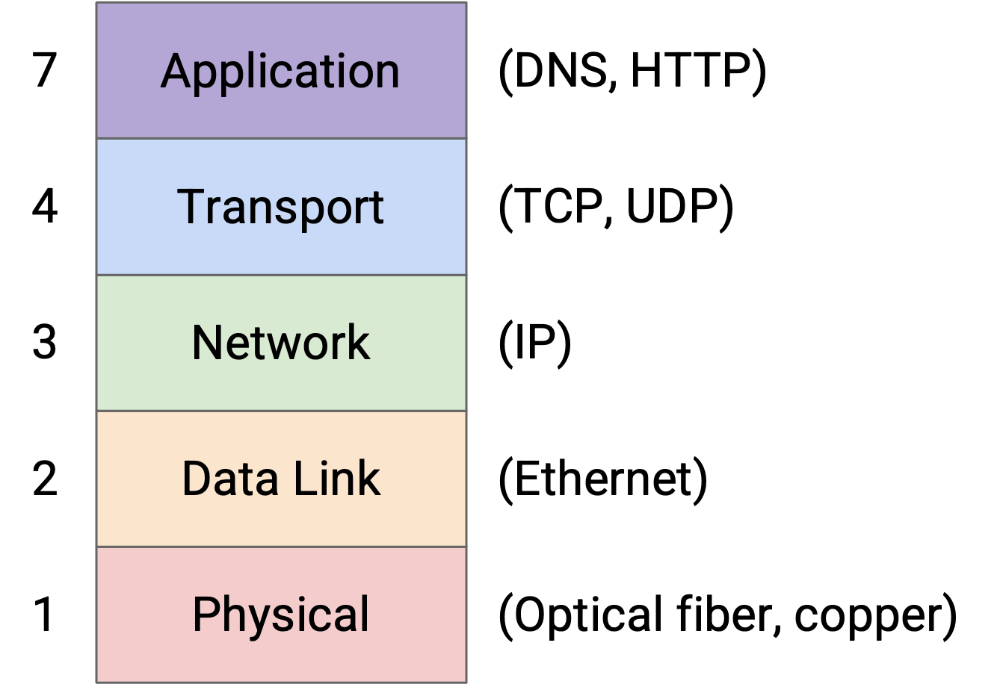
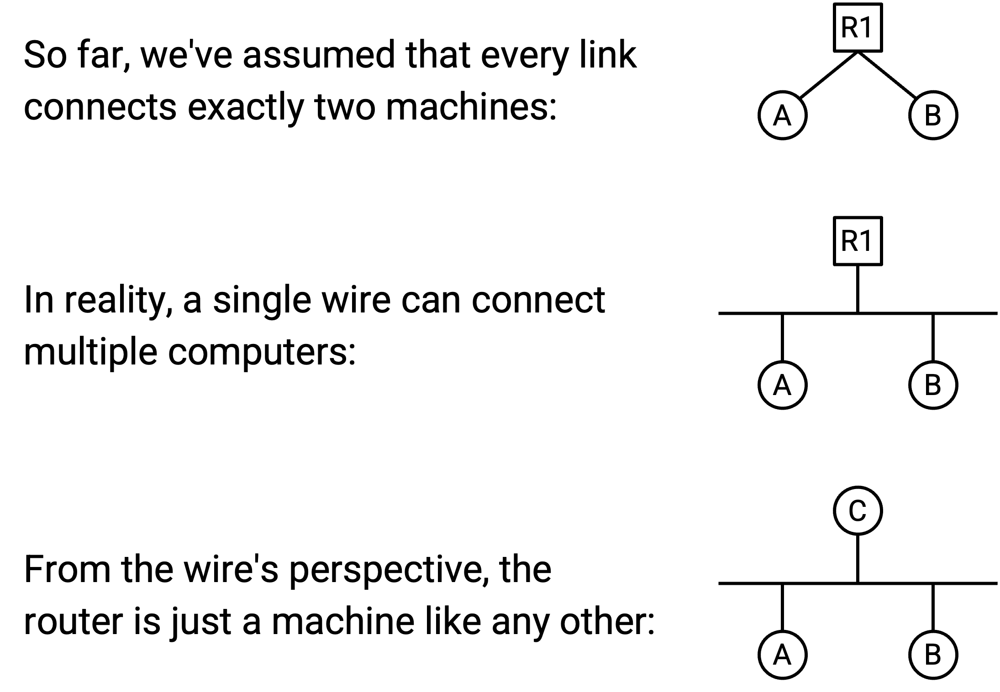
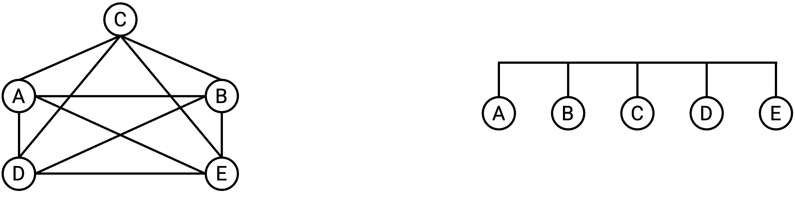
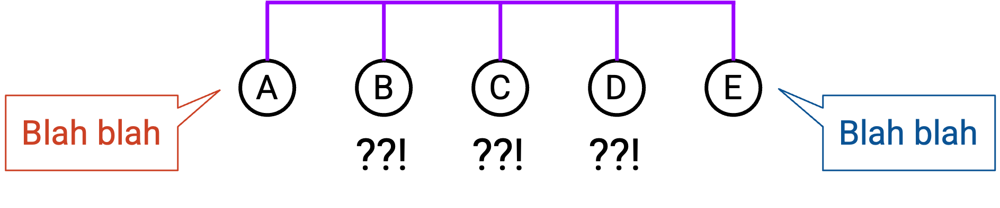
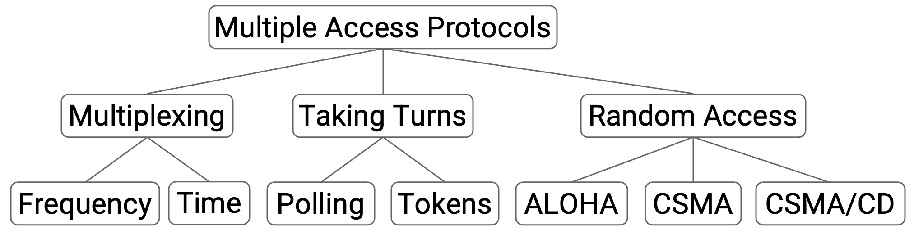
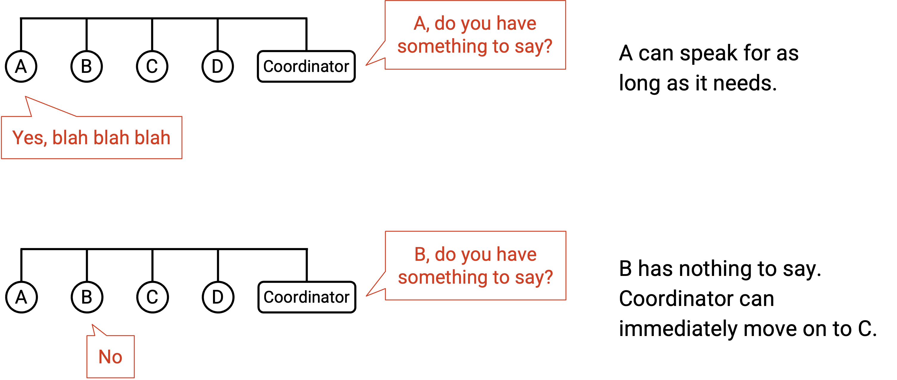
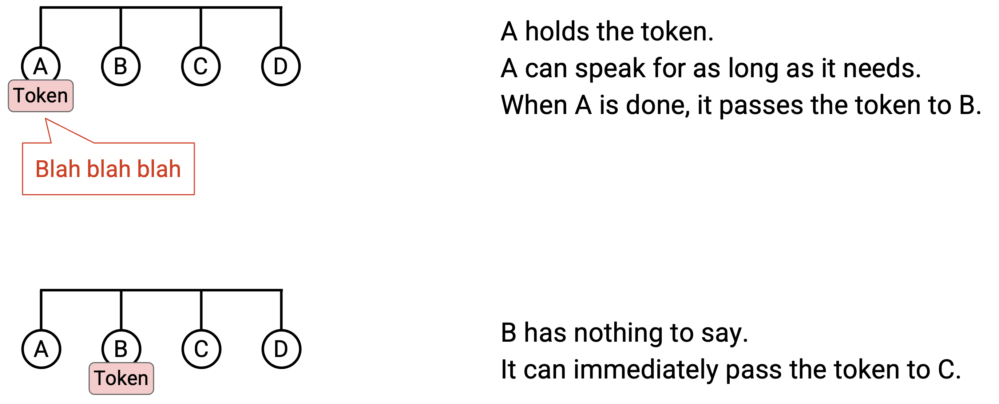
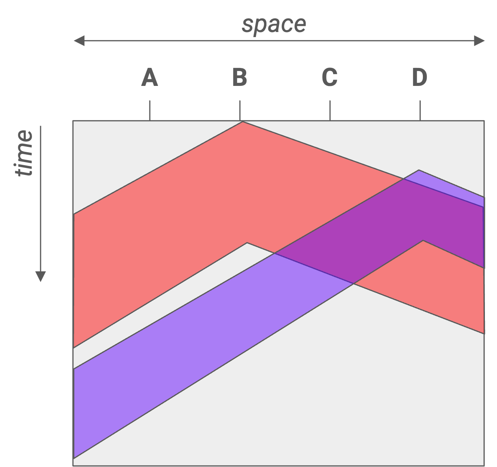
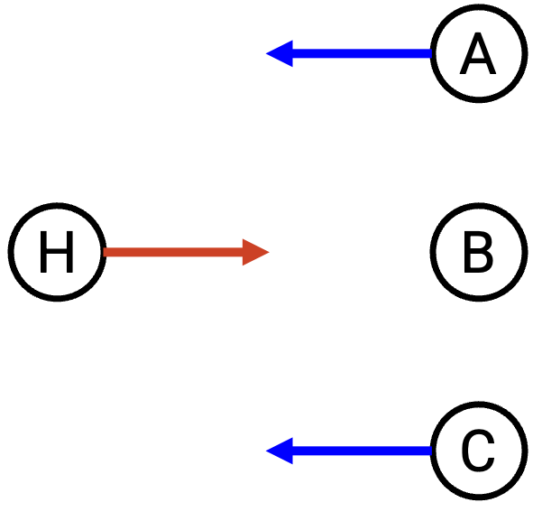
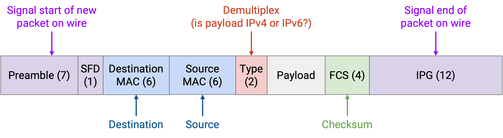

Ethernet
Local Networks
In this section, we’ll focus on what happens inside a local area network, such as the network in your home with your computer and your home router. This is in contrast with the wide-area networks we’ve been seeing so far, which span longer distances.
In particular, we’ll look at forwarding and addressing at Layer 2. We’ll have to define how packets are forwarded from a local host to a router. We’ll also see how hosts in the same local network can exchange messages at Layer 2, without a need to contact routers at all. The predominant protocol at Layer 2 is Ethernet.

Connecting Local Hosts
So far, we’ve drawn links connecting exactly two machines. In the local network, we drew a line connecting each host to the router.
In reality, a single wire might be used to connect multiple machines. In the local network, the hosts and the router can all be on the same wire. We can abstract even further and note that at Layer 2, the router is really just a machine like any other (that happens to run routing protocols at higher layers). Ultimately, the wire doesn’t really care what the connected machines are doing with the data they exchange.

What is the best way to wire up computers in a local network? Earlier, when we first introduced routing, we thought about using a mesh topology to connect all pairs of computers in the world. We also considered using a single wire to connect up all the computers. Ultimately, we decided that for a global network, neither approach was practical, and we needed to introduce routers.

We can consider these topologies again in the local network. A mesh topology is still pretty impractical. If a new host joins, we’d have to add a wire connecting it to every other host. However, a bus topology, where we connect all the computers along a single wire, is pretty common and practical in a local network.
The single-wire bus topology introduces the notion of a shared media. When we drew links connecting two machines, only those two computers used that link to communicate. Now, a packet from A to C, and a packet from B to D, might be on the wire at the same time, and the electrical signal on that wire cannot hold both packets simultaneously.

As an analogy, consider multiple people on a group call, sharing a single phone line: Any two people can talk to each other, but you can’t have two simultaneous conversations, or else nobody understands what’s being said.
We’ve drawn links as wires with electrical signals on them for simplicity, but in reality, the link technology could use other shared media. For example, in a wireless link technology, all hosts connected by the link share the same part of the electromagnetic spectrum.
Communicating over Shared Media: Coordinated Approaches
In a network with a shared medium, there’s a risk that transmissions from different nodes may interfere or collide with each other. If two computers try to transmit data simultaneously, their signals will overlap and interfere. The recipients may be unable to decode the signal, and they can’t tell who sent the signal. To solve this problem, we need a multiple access protocol that ensures that multiple computers can share the link and transmit over it.

One possible category of approaches is to allocate a fixed portion of resources to each node on the link. There are two ways we could consider dividing up the resources. In frequency-division multiplexing, we allocate a different slice of frequencies to each computer. (Consider AM/FM radio or broadcast TV, which divide up frequencies into channels.) In time-division multiplexing, we divide time into fixed slots and allocate a slot to every connected node.
Fixed allocation of resources has some downsides. There’s only a limited amount of frequency/time to distribute. Also, not everyone has something to say all the time, so the frequency/time we allocate might go unused most of the time. This approach is wasteful, because it confines computers to their specific allocated slice, even while other slices might be unused.
Instead of fixed allocation, another category of approaches are based on the nodes taking turns, without any fixed allocations. In this category, we’re dynamically partitioning by time, so that nodes use only the time they need during their turn, with no wasted time. There are two ways we could consider having nodes take turns.
In a polling protocol, a centralized coordinator decides when each connected node gets to speak. The coordinator goes to each node one by one and asks if the node has something to say. If the node says yes, the coordinator lets the node speak for some time. If the node says no, the coordinator immediately moves on to the next node, and the node doesn’t waste any resources. Bluetooth is a real-world protocol using this idea.

The other way to let nodes take turns is token passing. Instead of having a centralized coordinator, we have a virtual token that can be passed between nodes, and only the node with the token is allowed to speak. If a node has something to say, it holds onto the token while transmitting, then passes it to the next node. If a node doesn’t have anything to say at the moment, it immediately passes the token to the next node. IBM Token Ring and FDDI are real-world examples of protocols that use this idea.

One downside to these turn-based approaches is complexity. We have to implement some form of inter-node communication, which could get complicated. In token passing, we might need some dedicated frequency channel for nodes to reliably pass the token between each other. We might also have to deal with complications like two nodes both thinking they have the token and causing a collision. In a polling protocol, we need to designate a central coordinator to communicate with nodes, and implement a way for the coordinator to talk to the nodes. In Bluetooth, your smartphone can be the central coordinator talking to auxiliary devices, but in other networks, it might not be obvious who the coordinator is.
Communicating over Shared Media: Random Access Approaches
A third category of approaches, besides fixed allocation or taking turns, is random access. In this approach, we just allow nodes to talk whenever they have something to say, and deal with collisions when they occur. The nodes don’t coordinate between each other, and just send data whenever they have something to send.
One major benefit of random access protocols is simplicity. Unlike the turn-based approaches, we don’t need to implement inter-node communication.
When the recipient gets a packet, it replies with an ack. If two nodes send data simultaneously, the collision causes their packets to be corrupted, so no ack is sent. If the sender doesn’t see an ack, it waits some random amount of time and re-sends. Waiting some random amount of time, instead of re-sending immediately, helps us avoid collisions when the packets are resent.
The naive random access protocol is “rude” because nodes start talking whenever they want, and deal with collisions afterwards. A more “polite” variant of this protocol is called Carrier Sense Multiple Access (CSMA). Nodes listen to the shared medium first to see if anybody is speaking, and only start talking when it is quiet. Here, “listen” refers to sensing a signal on the wire.
Note that CSMA does not help us avoid all collisions. If signals instantaneously propagated along the entire length of the wire, there would be no collisions in CSMA. However, propagation delay can introduce issues. Suppose node A on one end of the wire hears silence and starts transmitting. The signal might not have propagated to node B yet, on the other end of the wire. Node B hears silence and also starts transmitting, causing a collision.

This 2D diagram demonstrates how propagation delay can cause conflicts. A horizontal cross-section shows the wire at an instant in time, and lets us see how far the signal has propagated across the wire at that instant. A vertical cross-section shows a single location on the wire across time, and lets us see when that location sees the first and last bits of the transmission. Both H2 and H4 hear silence before they start transmitting, but their signals still collide.
To mitigate this problem, we can use CSMA/CD (Carrier Sense Multiple Access with Collision Detection), which extends the idea of CSMA. In addition to listening before speaking, we also listen while we speak. If you start hearing something while you’re transmitting, you stop immediately. Note that CSMA/CD still doesn’t fix the problem of collisions, but it allows us to detect collisions sooner.
If there’s only one speaker, there won’t be any collisions, and all of our random access schemes should work fine. If there are only a few speakers, there might be occasional collisions, but all of our schemes can deal with them. However, if many senders want to talk simultaneously, we may have problems with repeated collisions, and waiting a random amount of time to re-send won’t help.
To deal with repeated collisions, CSMA/CD uses binary exponential backoff. Each time we detect a collision on a retransmission attempt, we wait up to twice as long before the next retransmission. Note that we still randomly choose the retransimssion time, but each time we detect a collision, we choose the random number from a range with a limit that’s twice as high. For example, if we chose a random time in the range [0, 4] and detected a collision, the next random time we choose is in the range [0, 8].
Binary exponential backoff works well in both scenarios. When there are a few nodes speaking, repeated collisions are uncommon, so we can retransmit after a short wait time. When there are many nodes speaking, there are many repeated collisions, so the delay increases exponentially until there are no collisions (e.g. enough nodes have been delayed far into the future, and there are fewer nodes competing right now). This approach ensures we only slow down when many nodes want to speak, and maintains fast transmission when few nodes want to speak.
Brief History of Layer 2: ALOHANet
In 1968, Norman Abramson had a problem at the University of Hawaii. There was a central computer at the University of Hawaii, and he needed a way for computers on other islands to access this central computer. The resulting design was very influential to modern Layer 2 protocol designs.
The resulting protocol was called ALOHANet (Additive Links On-line Hawaii Area), which allowed wireless communication from other islands to the central computer. ALOHANet was wireless and used a shared medium, where everybody is sending data over the same link.
ALOHANet used a combination of fixed allocation and random access, because of its asymmetric setup. The central computer (hub) used its own dedicated frequency to transmit outgoing messages, and all remote nodes listened on this frequency to receive messages. With only one sender on a dedicated frequency, there’s no risk of collisions.
By contrast, all the remote nodes transmit on a separate shared frequency, and the hub listened to this frequency. The hub won’t collide with the remote nodes, because they use different frequencies, but the remote nodes could collide with each other.
This asymmetric design worked well for ALOHANet because the hub probably has more to send than the remote nodes.

ALOHANet was one of the first systems to use a random access protocol to handle collisions, and this approach would later be used in Ethernet. ALOHANet used the naive rude approach to random access. Later protocols like Ethernet used the more polite approach of CSMA/CD, where we listen for collisions before and during transimssion, and we back off exponentially when there are collisions.
LAN Communication: MAC Addresses
Because multiple computers can be connected along the same Ethernet link, we can actually use Layer 2 protocols to send messages between local computers on the same link, without using any Layer 3 protocols at all (e.g. no routers forwarding packets). In the postal system analogy, two people in the same room can pass letters between each other, without sending the letter to the post office.
One problem with sending messages over a shared media is: When we transmit the message, everybody on the link gets the message, not just the intended recipient. To send a message to just one person, we need an addressing system at Layer 2 so that we can identify which machine the message is intended for. In the postal system analogy, if I speak in a room, everyone gets the message. To talk to one specific person, I need to refer to them using their name.
At Layer 2, every computer has a MAC address (Media Access Control). MAC addresses are 48 bits long, and are usually written in hexadecimal with colons separating every 2 hex digits (8 bits), e.g. f8:ff:c2:2b:36:16. MAC addresses are sometimes called ether addresses or link addresses.
MAC addresses are usually permanently hard-coded (“burned in”) on a device (e.g. the NIC in your computer). Most OSes will let you override the MAC address in software, but every device already comes with a MAC address installed. MAC addresses are allocated according to the manufacturer that creates the hardware. The first two bits are flags, then the next 22 bits identify the manufacturer, then the last 24 bits identify the specific machine within that manufacturer’s address space.
Why not just use IP addressing? Hosts on a link might want to exchange messages, without ever being connected to the Internet (i.e. they don’t have an IP address at all).
This permanent addressing scheme is different from IP, where you receive an address when you first join a network, and the address depends on your geographic location. MAC addresses are usually supposed to be globally unique, because you might plug your computer into any local network, and it’d be bad if two computers on a link had the same MAC address.
LAN Communication Types, Ethernet Packet Structure
There are different possible destinations in a Layer 2 packet. In unicast, the packet is intended to a single recipient. In broadcast, the packet is intended for all machines on the local network. In multicast, the packet is intended for all machines in the local network that belong to a particular group. Machines can choose to join certain groups to receive packets meant for that group. Ethernet supports unicast, multicast, and broadcast.
Note that broadcast is sometimes thought of as a special case of multicast, where everybody is automatically part of the broadcast group.
This unicast/broadcast/multicast model extends to other layers too. For example, we saw anycast at Layer 3, where the goal was to send to any one member of a group (any of the servers with the same IP address).
Ethernet Packet Structure
A data packet in Ethernet is called a frame. Many fields look similar to the IP header fields, though there are some differences.

The Ethernet packet starts with a 7-byte preamble, which indicates the start of a packet. This helps separate packets as they’re signalled across the wire.
Then, we have the destination and source MAC addresses, similar to the destination and source fields in the IP header. We have a 2-byte type field, which allows us to demultiplex between IPv4 or IPv6, and pass the packet payload to the correct next protocol. This is similar to the protocol field in the IP header, or the port field in the TCP/UDP headers. We also have a checksum, though unlike IP, the checksum is over the entire packet, so that we don’t have to rely on higher layers (e.g. the packet might not be TCP/IP at all).
To unicast a message, we set the destination MAC address to a specific machine’s MAC address. Everybody on the shared medium receives the packet, so everybody needs to check the destination MAC to see if the packet is meant for them. If the destination MAC address doesn’t match your address, you should ignore the packet.
To broadcast a message, we set the destination MAC to the special address FF:FF:FF:FF:FF:FF (all ones). Just like in unicast, everybody on the shared medium receives the packet, but this time, because the destination MAC address is the broadcast address, everybody knows to reads the packet. Note that this all-ones broadcast address is the same in every Ethernet network.
To multicast a message, we set the destination MAC to the address of that group. Recall that the first two bits of the MAC addresses are flags. Normal addresses allocated to machines always set the first bit to 0, and addresses for groups always set the first bit to 1. Just like in unicast and broadcast, everybody still gets the message. Anybody who’s part of a group needs to make sure they’re listening on that group’s address in order to receive packets multicast to that group. Additional protocols are necessary to control who belongs to which groups, and we won’t discuss them further.
Layer 2 Networks with Ethernet
So far, we’ve shown Layer 2 protocols as operating on a single link with multiple computers attached to it, but we could introduce multiple links and build a network entirely using Layer 2. Packets could be forwarded, and machines could even run routing protocols, all exclusively using Layer 2 MAC addresses.
The routing protocols we ran at the IP layer could also work at Layer 2, though one downside is that we can’t aggregate MAC addresses. IP addresses are allocated based on geography, but MAC addresses are allocated based on manufacturer, so there’s no clear way to aggregate them. This downside is why we can’t build the global Internet out of only Layer 2.
If there are multiple links in a single local network, we’d have to ensure that if someone broadcasts a message, any switches at Layer 2 forward the packet out of all outgoing ports.
Multicast gets more complicated in a Layer 2 network with multiple links. Additional protocols are needed, though we won’t discuss further.
One example of multicast being useful on a LAN is Bonjour/mDNS, a protocol developed by Apple. In this protocol, all Apple devices (e.g. iPhone, iPad, Apple TV) are hard-coded to join a special group on the local network. If your iPhone wants to find nearby devices to play music (e.g. Apple TV, Apple speaker or HomePod or whatever they call it), the iPhone can multicast a message to the group, asking if anybody can play music. Devices in the group can also multicast responses, saying “I am an Apple TV and I can play music.” Interestingly, this protocol actually also uses DNS in the multicast group to send SRV records, which maps each machine to its capabilities.
Historical note: In the modern Internet, we’ve said that the terms “router” and “switch” are interchangeable. Now that we have the notion of a Layer 2 network, we could say that a switch only operates at Layers 1 and 2, while a router operates at Layers 1, 2, and 3.
If you go back to our picture of wrapping and unwrapping headers, we’ve assumed that every router parses the packet up to Layer 3, and forwards the packet to the next router over IP. However, if we had a Layer 2 network with multiple links, a switch only needs to pass the packet up to Layer 2 and forward the packet to the next switch over Ethernet.
Today, pretty much all switches also implement Layer 3, which is why we use the terms interchangeably. Historically, Ethernet predates the Internet, which is why there was a distinction between switches and routers.